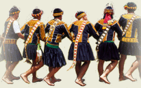

原住民舞蹈的特色
• 合歌而舞：
大部分的原住民舞蹈中，歌謠具有關鍵的重要性，有舞必有歌，舞蹈的動作往往隨著歌謠的特性轉換；或可說歌曲調節了舞蹈動作。舞蹈的分類與命名往往取決於伴唱的歌謠，同一支歌謠可由不同的動作組成一個序列，動作與歌謠的關係可能是固定的、也可能有變化的彈性。因此要了解原住民舞蹈，應該先了解歌謠的型態與特色。雖說如此，族人的身體動作並非只是歌曲的附庸，而是強化了歌謠所欲表現的力度與群體合作，使之超越了音樂單獨的表現，並且將個人的努力表現，予以整合賦之予集體的形式。
• 生活舞蹈：
原住民舞蹈是不折不扣的生活舞蹈，亦即舞蹈和部落共同體的社會生活緊密連結，舉凡莊嚴的祭典與歡慶的儀禮，如：新屋落成、婚禮等，都是居民們一同起舞的時機。因為看重部落的參與，大多數的舞蹈動作不矯飾，甚至取材自日常生活的動作，例如：行走、播種等。並不強調違反自然身體體態的技巧；但卻強調毅力、耐力、與群體合作性。
• 社會範式：
原住民舞蹈反映社會秩序的範式。雖說舞蹈是部落的集體活動，但是誰可以跳、何時可跳、跳哪支舞、誰站在哪個位置等，往往並非基於技術自由競爭的結果，而必須遵守社會階層的原則。特別在祭典舞蹈與重要的社會儀禮舞蹈中，從舞者隊形的安排上，男女有別、長幼有序的社會關係，一目了然。此外，原住民社會雖賦予舞蹈各樣的情境意義，舞蹈強化社會凝聚力，也是個人表現自我以受社會評價的時機。但是最終的目的仍在於強化社會一體的價值觀。因此特別在祭典舞蹈中，典型型態之一，就是手牽手圍成圓圈或排列成隊的形式。
• 無名有義：
並非所有的原住民社會，都有一個可以翻譯為「舞蹈」的集合名詞。雖然有舞蹈的表現，但是族人們鮮少賦予動作一個特定的舞蹈類型或名稱。反之，跳舞這件事在原住民社會可能被歸類為信仰儀式、政治結盟、集體勞動和社會娛樂。因此，觀者必須放下自身對舞蹈的想像，從原住民文化主位的角度理解舞蹈的意義。
長年研究阿美族歌舞的學者明立國，歸類阿美族舞蹈動作的型態如下：（《奇美之歌》，1999 年，頁 16~20）
• 節奏的原則：

阿美族群體性舞蹈動作是以「一致性」為原則，也就是說，不論是方向、旋律、快慢、強弱等，參與者都是在追求彼此之間的一致性，且這些動作似乎都有一個共同的目的，即產生舞步上有強拍出現的「等質節奏」與「異質節奏」，進而與旋律對應構成「複節奏」、「複拍子」的表演形式。
在阿美族的舞蹈中，「等質節奏」是指在一首歌曲中，舞步不斷的重複或循環一種固定的拍節模式而言；「異質節奏」則是指在一首歌曲中，舞步由幾種不同的拍節模式來構成。通常這有三種情形出現：
1. 重複或循環的舞步拍數與歌曲的拍數相同。這是一種歌與舞的拍節單位時值等長的情形，比如說歌曲有八拍，舞步也以八拍為一循環，來形成一種固定反覆的動作模式。
2. 重複或循環的舞步拍數少於歌曲的拍數。這是一種舞蹈的節奏單位時值較旋律節奏單位為短的情形。比如說歌曲有九拍，舞步則以兩拍或四拍為一循環來形成一種固定反覆的動作模式。這在各地區阿美族的舞蹈中都可以發現，但其中以豐年祭的歌舞最為明顯。
3. 視以上兩種情形的組合形式。在中部阿美族海岸部落的豐年祭當中，或一般性的歌舞場合中這種節奏均可發現。
• 牽手的形式與意義：
1. 相鄰二人牽手：即相鄰的二人互相牽手的方式，這種牽手的方式，隨著部落的不同，而有不同的規則。例如：南勢群與奇美採五指張開互扣的方式，海岸群則有鉤食指、中指、小指以及握手等不同的方式。這些規則有些部落相當清楚，有些則不甚明顯，情形並不一致。
2. 相隔一人牽手：這種牽手的方式，除了首尾兩人之外，其餘相鄰的二人均不牽手，而是兩臂互相交錯而過，與相鄰的一人在夾中的一人胸前握手而牽。這種牽手的方式，使參與者彼此之間的距離與空間，較相鄰二人牽手的方式更為緊密，是南部阿美族豐年祭典型牽手方式，中部阿美則是在豐年祭快結束時，才以這種形式來牽手。此外，阿美族的女性歌舞，普遍的都是這種牽手方式。
• 隊形與運轉的形式與意義：
依照性別分殊有以下的隊形：
• 女性在中間。
• 女性在外圈。
• 男女一起。這種跳法又有兩種：
1. 女子整對列於男子之後。
2. 女子個別穿插於男子之旁。
• 男女分開。這種跳法又有兩種：
1. 男的在一邊跳，女的在另一邊跳。
2. 男的跳累了，然後才換女性下去跳。
由隊形可見，男性與女性的舞是不同在一起跳的，當然，歌也是不同的。現在情形已經和以前不一樣了，在阿美族女性參與的程度有明顯增加的趨勢。
1. 依照年齡或階級的順序：通常是依照社會地位與年齡階層的高低順序排列
2. 依照行進的方向有以下型態：
• 依順時鐘或逆時鐘方向成圓形運轉，圓圈有開口和閉鎖兩種
• 依順時鐘或逆時鐘方向成螺旋形運轉
• 單一或複數行列式
• 波紋式
• 其他
以上阿美族舞蹈動作型態的原則，大致上亦可應用於其他不同的族群。然而在身體動作的部分，明立國對於阿美族的舞蹈動作有以下的看法：「阿美族的舞蹈是以腳步的拍節變化為核心來發展的，其他任何的肢體性動作，都必須建立在這個基礎上才能夠成立。」雖然腳步變化為主的確是臺灣原住民各族舞蹈的特色，但是人類的身體是一個有機的整體，各個部位互相聯繫牽動，因此臺灣原住民各族舞蹈的身體動作特色，應從整體身體動作的運動狀態觀察之。
• 運動程度小：走路式的行進、速度緩慢、上半身擺動幅度小
• 運動程度中等：開始有彎腰、蹲、抬腳等動作
• 運動程度大：動作激烈、誇張，速度快，擺動幅度大，跳躍腳步會帶動上半身和手部的動作